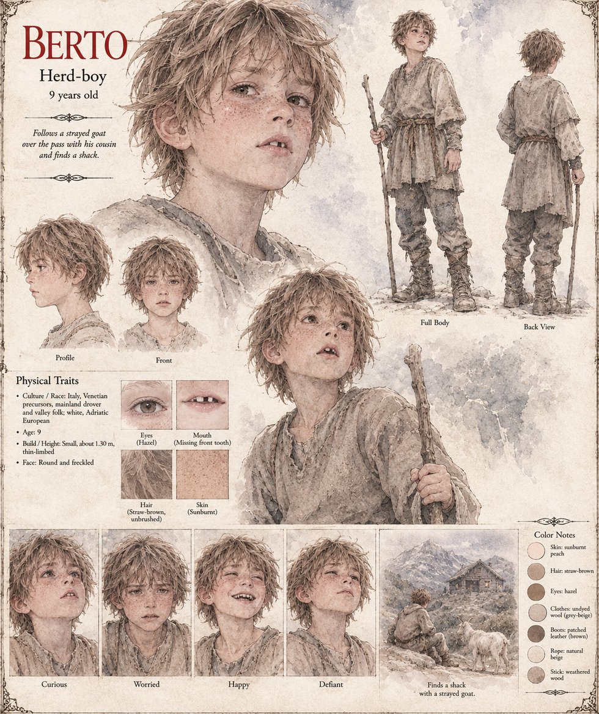

Berto
Herd-boy · Tone’s cousin · 9
The cousin of Tone, nine years old, he crosses the pass with Tone after a strayed goat, looks down into a valley full of lamps, and runs north with him from the thing they hear at dusk until they fall over a hermit’s woodpile. By the fire, over hot water and salted shrimp, the two tell the whole of it in the breathless, run-together, exact manner of children who have been badly frightened and are now warm. A hundred and six lamps, said Berto, who had counted, and was corrected by no one. They leave at dawn with a memory of the valley and almost none of the shack, which their mother ascribes to fever.
The manuscript gives his age (nine), his cousin and his count, and no height, build, face or hair. The sheet’s small thin-limbed build of about 1.30 m, round freckled face, straw-brown unbrushed hair, hazel eyes, missing front tooth, undyed grey-beige wool, patched boots and tall staff are its own, as are its panels Curious, Worried, Happy and Defiant. Its scene Finds a shack with a strayed goat. draws him on a hillside with a white goat, a wooden shack with a lit window below a snow mountain; none of that setting is in the manuscript, which has the boys run north to the shack after what they hear from the ridge. Its title line, following a strayed goat over the pass with his cousin and finding a shack, condenses the manuscript.
“A hundred and six lamps, said Berto, who had counted, and was corrected by no one.”